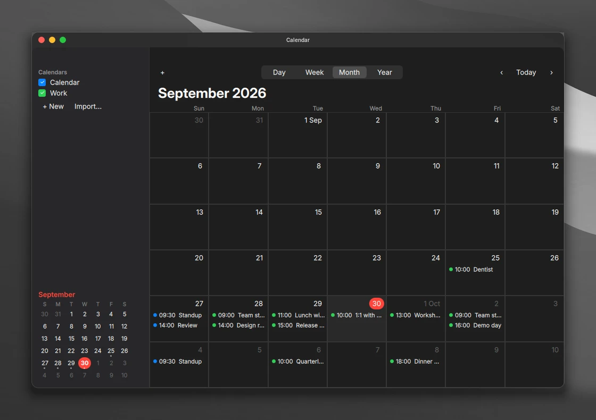

Control Center
Network, sound, display and focus. One click away.

Clave 1.1.2
A complete desktop for Arch Linux. Tiling kept.

Overview shows every window on every Space.

Built in. Drawn in one style.
Network, sound, display and focus. One click away.
One pane for each part. Search finds any setting.

Pin apps. Minimize with a genie effect.

Press Print. Pick a screen, a window or an area.

Plain Markdown files. Yours to keep.

Plain .ics files. No account needed.

From the Arch repositories, with no background services. Only Weather, Maps and Podcasts go online, and only while open.
Files, Text Editor, Calculator, Notes, Calendar, Contacts, Reminders, Stickies, Weather, Clock, Maps, Photos, Books, Podcasts, Music, Videos, Voice Memos, Camera, Fonts, Chess, Freeform board, Scanner, Screen Sharing, Console, System Information, Disk Utility, Keychain, Backups and Activity Monitor.
Overview, Control Center, Apps and System Settings.
Recorded in a virtual machine, so animations run slower than on real hardware.
Secure and quiet by default. Nothing to set up.
A firewall, AppArmor and a hardened kernel.
No accounts. Online features stay off until you want them.
A feature you turn off starts nothing.
linux-hardened kernel with lockdown, IOMMU and init_on_free.apparmor.d, auditd and a sysctl lockdown.umask 027 and a noexec /tmp.arch-audit check.Good to know: USB devices you plug in later are blocked until you allow them. Three wrong passwords lock the account for 15 minutes. Skip all of it with --no-harden.
Releases are signed, and clave-update installs only signed releases.
clave-doctor checks that Clave still works with what Arch installed. A pacman hook warns after an upgrade that this release was not tested with.
On Arch Linux, as your normal user.
bash <(curl -fsSL https://raw.githubusercontent.com/Andrew-most-likely/clave/main/setup.sh)
Then log out and choose Hyprland. The installer asks before it changes anything.
Preview every change with --dry-run first.
git clone https://github.com/Andrew-most-likely/clave ~/.local/src/clave cd ~/.local/src/clave ./install.sh --dry-run ./install.sh
--yes | No questions. Hardening is included. |
--no-harden | Skip the hardening. |
--extras | Also install the optional apps. |
--personal | Use fonts, a cursor and sounds you supply. |
--user-only | Only your home folder. No sudo. |
--dry-run | Show what would happen. Change nothing. |
Every file the installer replaced comes back. Packages stay installed.
~/.local/src/clave/uninstall.sh ~/.local/src/clave/uninstall.sh --system
The second line also removes the login screen, boot splash and hardening.
Press Super / on the desktop for the rest.
It moves your old config aside to a dated backup and keeps your screens, wallpapers and Dock apps. uninstall.sh puts everything back.
~/.config/hypr/custom.lua for any Hyprland setting. The installer never replaces it.
Yes. Put an SVG at ~/.config/clave/branding/logo.svg.
Run clave-doctor, then open an issue on GitHub with its output and ~/.cache/clave/install.log.